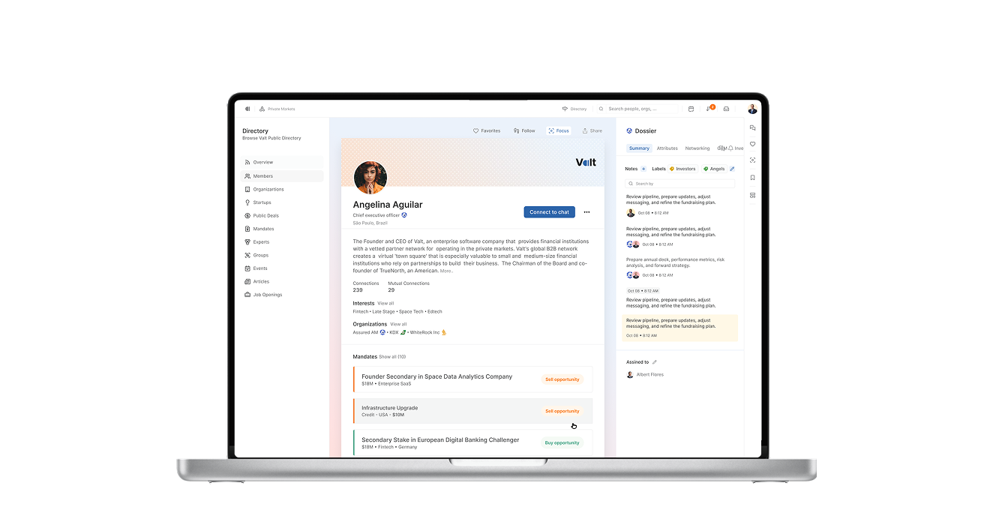
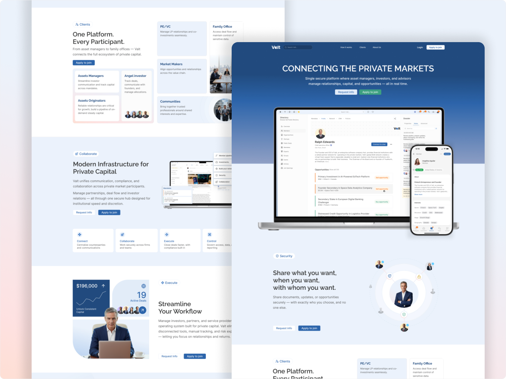
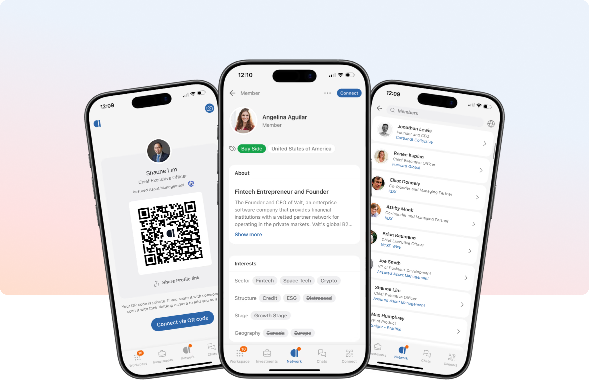
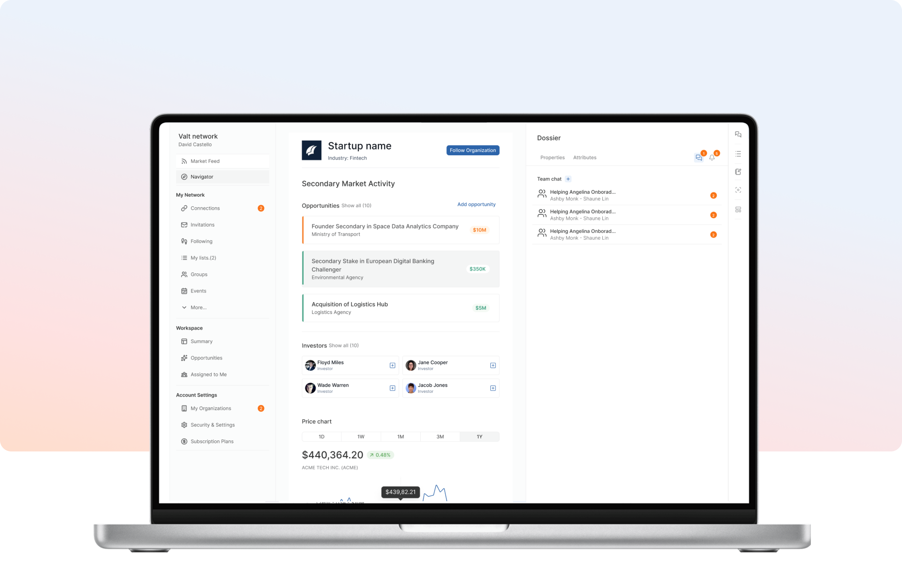

Valt Network
Private Market Social
Designing the professional layer for private market investors and high-growth companies, from zero to a full-featured social product.

The project at a glance
Valt Network is a private market social network connecting investors — LPs, GPs, Angels, Family Offices — with high-growth private companies actively seeking capital. The platform was designed to replace fragmented, informal relationship-building in the private market with a structured, verified, and intelligence-driven environment.
I owned the end-to-end UX and UI of both the landing page and the social product experience. Starting from concept definition, I led user flows, information architecture, wireframing, high-fidelity design, and the design system that supports the product.
- User Research
- Wireframing
- Design System
- Information Architecture
- UI Design
- Prototyping
- Landing Page ↗

Landing page · Valt Network
Private markets were builton information gaps
Before Valt, serious investors and growth-stage companies had no structured, verified place to find each other. The status quo was broken — and that was the opportunity.
No verified identity layer. Existing platforms mixed professionals with noise — unverified profiles, anonymous actors, and irrelevant connections diluted signal for serious investors.
Founders cold-emailing into the void. Private companies had no structured channel to surface to thesis-aligned investors — and no way to control what information was shared or with whom.
Zero deal flow intelligence. Investors had to rely on personal networks and luck to discover opportunities early. There was no platform providing structured signals for private market deal flow.

How Iapproached it
A structured design process from discovery to delivery — anchored in user needs and business constraints.
Understanding the Private Market
Stakeholder interviews with investors and founders to map existing workflows, pain points, and mental models around deal flow. Competitive analysis of existing platforms (LinkedIn, AngelList, Carta) to identify the whitespace.
Information Architecture & User Flows
Mapped the core journeys for both user types — investor and company — across discovery, verification, connection, and deal flow. Defined the IA for the social product and the landing page conversion funnel.
Wireframes & High-Fidelity UI
From low-fidelity wireframes to high-fidelity screens — iterated rapidly based on internal reviews. Built the design system (components, tokens, patterns) in parallel to ensure consistency across the product and landing page.
Prototyping & Handoff
Interactive prototype for key user flows — verification, profile setup, deal discovery, and connection. Structured handoff documentation for the development team including specs, tokens, and interaction notes.

Social feed · Valt Network web app
Key choicesand why
The reasoning behind the most important decisions — not just what was built, but the thinking that got there.
Verification as the Foundation
Private markets run on trust. Before designing any feature, I established verified identity as the core constraint: every profile, connection, and deal signal had to be anchored to a verified user. This shaped the entire onboarding flow and prevented the noise problem that plagues LinkedIn and AngelList.

Two Distinct User Experiences
Investors and companies have fundamentally different goals. Rather than forcing both into one generic feed, I designed separate profile architectures: investors have a mandate-driven profile showing thesis and focus areas; companies have a dossier-style profile controlling what information is shared and with whom.

What Itook away
Starting with the Whitespace
The competitive analysis of LinkedIn, AngelList, and Carta revealed a clear gap: no platform served verified, thesis-aligned private market connections. Starting the design process from that whitespace gave every decision a clear north star and prevented scope creep throughout the 12-month engagement.
User Testing with Real Investors
The product was designed based on stakeholder interviews and competitive analysis. With more time, I would have run structured usability tests with LP and GP users earlier in the process to validate the deal flow logic before going into high-fidelity screens.
Trust is a Design System
In private markets, the product is trust. Every design decision, from profile verification to information access controls, was a trust decision. The UI was the surface. The architecture was the product.
Designing for Regulated Markets
This project introduced me to the intersection of finance, compliance, and product design. The constraints around information sharing in private markets pushed me to think beyond UX patterns into legal and regulatory territory. An area I want to go deeper in.
The platform is live.
Valt Network launched at valtnetwork.com. A full-featured private market social product, built from zero over a 12-month engagement.
Check it live →